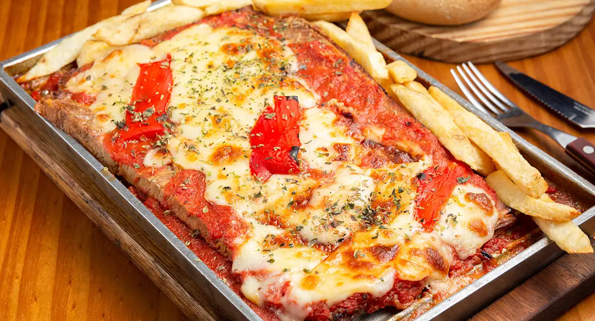

Postre de gelatina y crema de leche (Internacional)
- Paso 1 / 5 Diluir la gelatina sin sabor en agua caliente.
- Paso 2 / 5 Preparar las gelatinas de distintos sabores cada una en distintos recipientes (preferiblemente rectangulares, para así luego de cuajar poder cortar con moldes de galletas de distintas formas).
- Paso 3 / 5 Llevar a refrigerar intercambiando los colores de las gelatinas.
- Paso 4 / 5 Aparte licuar las 3 leches, luego agregar la gelatina sin sabor ya diluida, con un chorrito de esencia de vainilla.
- Paso 5 / 5 Vaciar al bol donde están las gelatinas, y llevar de nuevo a la nevera. Nota: Al servir se puede decorar con la fruta que se desee.

Matambre a la pizza (Argentina)
- Paso 1 / 5 Sumerge el matambre en la leche y el ajo. Déjalo reposar durante 12 horas.
- Paso 2 / 5 Si es necesario apurar el proceso, cocina el matambre cubierto de caldo hasta que esté tierno.
- Paso 3 / 5 Retira la grasa del matambre, acomódalo sobre la parrilla y cúbrelo con el jamón, la salsa de tomate, el queso mozzarella y las rodajas de tomate fresco.
- Paso 4 / 5 Rocía con un hilo de aceite de oliva, y cocina el matambre hasta que el calor llegue a fundir el queso.
- Paso 5 / 5 Sirve el matambre a la pizza con una guarnición de papas fritas y ensalada de lechuga y tomate.